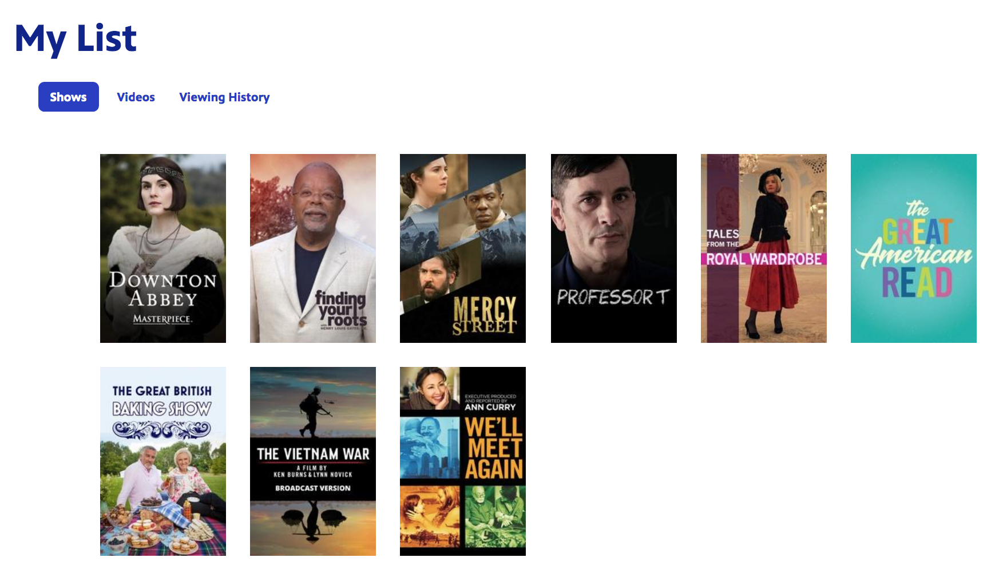
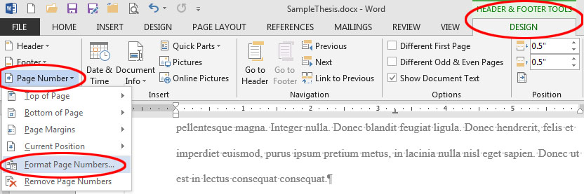
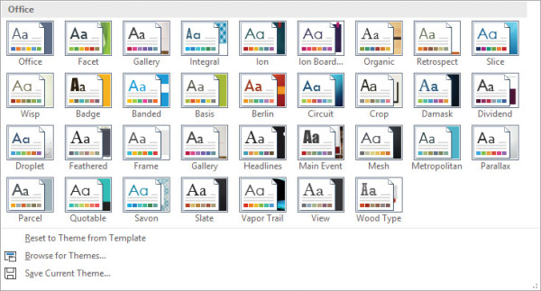
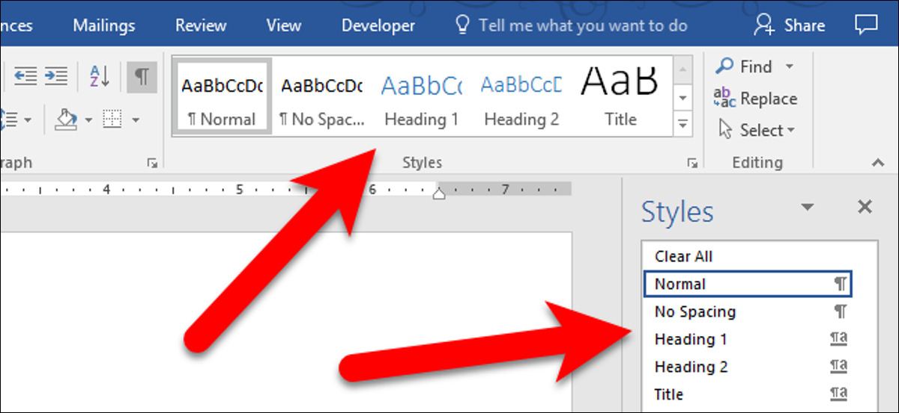

Video provides a powerful way to help you prove your point.
When you click Online Video, you can paste in the embed code for the video you want to add.
You can also type a keyword to search online for the video that best fits your document.
For example, with the image below you can select a video and paste it in your document;

To make your document look professionally produced, Word provides header, footer, cover page, and text box designs that complement each other. For example, you can add a matching cover page, header, and sidebar.
Click Insert and then choose the elements you want from the different galleries.
Refer to the figiure below;

Themes and styles also help keep your document coordinated.
When you click Design and choose a new Theme, the pictures, charts, and SmartArt graphics change to match your new theme.
When you apply styles, your headings change to match the new theme.
Themes;

Styles;

Save time in Word with new buttons that show up where you need them.
To change the way a picture fits in your document, click it and a button for layout options appears next to it.
When you work on a table, click where you want to add a row or a column, and then click the plus sign.